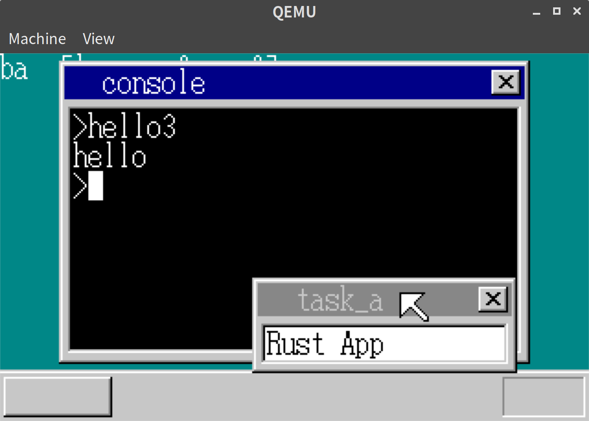
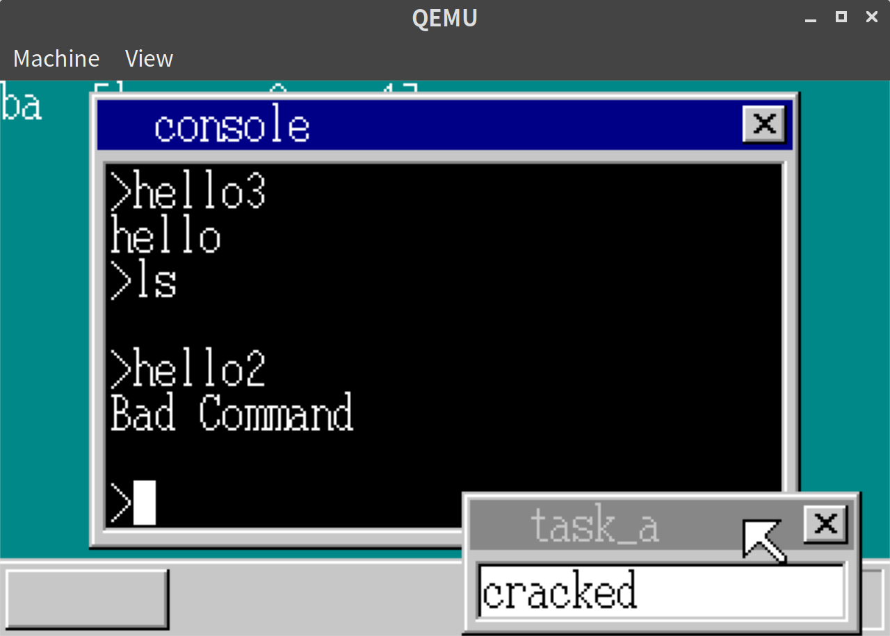
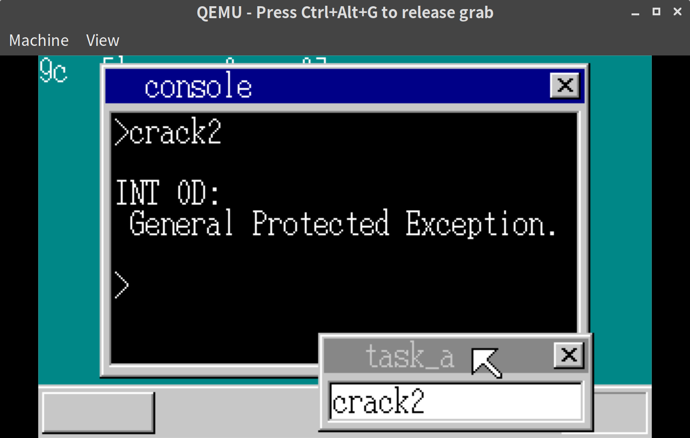

「30日でできる！OS自作入門」をRustで。21日目
「30日でできる！OS自作入門 」のC言語の部分をできるだけRustですすめてみる。今回は21日目の内容。
Rustでアプリケーションを書く
前回はアセンブリ言語で書かれたコードをOS上のアプリケーションとして実行した。本では次にCのコードを実行している。折角なので、ここではRustのコードをアプリケーションとして実行する。
OS用の設定を使いまわすので、以下の通り設定する。
$ cargo new --lib hello
$ cp -r .cargo hello/
$ cp i686-haribote.json hello/Cargo.tomlもOSにならって修正したのち、以下の通りMakefileを追加する。
# Makefile
$(IMG) : $(OUTPUT_DIR)/ipl.bin $(OUTPUT_DIR)/haribote.sys $(OUTPUT_DIR)/hello.bin $(OUTPUT_DIR)/hello2.bin $(OUTPUT_DIR)/hello3.bin Makefile
mformat -f 1440 -C -B $< -i $@ ::
mcopy $(OUTPUT_DIR)/haribote.sys -i $@ ::
mcopy $(OUTPUT_DIR)/hello.bin -i $@ ::
mcopy $(OUTPUT_DIR)/hello2.bin -i $@ ::
mcopy $(OUTPUT_DIR)/hello3.bin -i $@ :: # <- 追加
# 以下追加
$(OUTPUT_DIR)/libhello.a: $(OUTPUT_DIR_KEEP)
cd hello/ && cargo xbuild --target-dir ../$(OUTPUT_DIR)
cp $(OUTPUT_DIR)/i686-haribote/debug/libhello.a $(OUTPUT_DIR)/
$(OUTPUT_DIR)/hello3.bin: $(OUTPUT_DIR)/libhello.a $(OUTPUT_DIR_KEEP)
ld -v -nostdlib -m elf_i386 -Tdata=0x00310000 -Tkernel.ld $< -o $@hello3.binのmain関数にジャンプするため、呼出側で最初の6バイトを書き換えるようにする。
// console.rs
fn cmd_app<'a>(&mut self, filename: &'a [u8], fat: &[u32; MAX_FAT]) {
// 省略
let gdt_offset = 1003; // 1,2,3はdesciptor_table.rsで、1002まではmt.rsで使用済
let gdt = unsafe { &mut *((ADR_GDT + gdt_offset * 8) as *mut SegmentDescriptor) };
*gdt = SegmentDescriptor::new(finfo.size - 1, content_addr as i32, AR_CODE32_ER);
// 追加: kernel.ldを使ってリンクされたファイルなら最初の6バイトを置き換える
if finfo.size >= 8 {
// 4から7バイト目で判定
let bytes = unsafe { *((content_addr + 4) as *const [u8; 4]) };
if bytes == *b"Hari" {
self.display_error("Hari");
let pre = unsafe { &mut *(content_addr as *mut [u8; 6]) };
*pre = [0xe8, 0x16, 0x00, 0x00, 0x00, 0xcb];
}
}
farcall(0, gdt_offset * 8);
memman.free_4k(content_addr as u32, finfo.size).unwrap();
self.newline();
}これで準備はできた。アプリ側のlib.rsは以下の通り
// hello/src/lib.rs
#![no_std]
#![feature(asm)]
#![feature(start)]
#![feature(naked_functions)]
use core::panic::PanicInfo;
#[no_mangle]
#[start]
pub extern "C" fn haribote_os() {
put_char(b'h');
put_char(b'e');
put_char(b'l');
put_char(b'l');
put_char(b'o');
}
#[naked]
fn put_char(c: u8) {
unsafe {
asm!("MOV EDX,1
MOV AL,[$0]
INT 0x40" : : "r"(&c) : : "intel");
}
}
#[panic_handler]
fn panic(_info: &PanicInfo) -> ! {
loop {
unsafe {
asm!("HLT");
}
}
}実行結果
コンソール画面でhello3を実行すると無事にhelloと表示された。

OSの保護
アプリケーション側のコードを例えば以下のようにするとOSに不具合をおこすことができる。
// hello/src/lib.rs
#[no_mangle]
#[start]
pub extern "C" fn haribote_os() {
unsafe { *(0x00102600 as *mut u8) = 0 }; // <- 追加
put_char(b'h');
put_char(b'e');
put_char(b'l');
put_char(b'l');
put_char(b'o');
}実行すると、lsで何も見えなくなり、hello2などのアプリケーションの実行も失敗する。

これを防ぐために、GDTで適切にメモリアクセスの設定をする。
// console.rs
pub fn cmd_app<'a>(&mut self, filename: &'a [u8], fat: &[u32; MAX_FAT]) {
let memman = unsafe { &mut *(MEMMAN_ADDR as *mut MemMan) };
let mut finfo = search_file(filename);
if finfo.is_none() && filename.len() > 1 && filename[filename.len() - 2] != b'.' {
let mut filename_ext = [b' '; MAX_CMD + 4];
let filename_ext = &mut filename_ext[0..(filename.len() + 4)];
filename_ext[..filename.len()].copy_from_slice(filename);
filename_ext[filename.len()] = b'.';
filename_ext[filename.len() + 1] = b'b';
filename_ext[filename.len() + 2] = b'i';
filename_ext[filename.len() + 3] = b'n';
finfo = search_file(filename_ext);
}
if finfo.is_none() {
self.display_error("Bad Command");
return;
}
let finfo = finfo.unwrap();
let content_addr = memman.alloc_4k(finfo.size).unwrap() as usize;
let app_mem_addr = memman.alloc_4k(APP_MEM_SIZE as u32).unwrap() as usize;
{
let ptr = unsafe { &mut *(CS_BASE_ADDR as *mut usize) };
*ptr = content_addr;
}
finfo.load_file(content_addr, fat, ADR_DISKIMG + 0x003e00);
let content_gdt = 1003; // 1,2,3はdesciptor_table.rsで、1002まではmt.rsで使用済
let gdt = unsafe { &mut *((ADR_GDT + content_gdt * 8) as *mut SegmentDescriptor) };
*gdt = SegmentDescriptor::new(finfo.size - 1, content_addr as i32, AR_CODE32_ER + 0x60);
// この辺から追加
let app_gdt = 1004;
let gdt = unsafe { &mut *((ADR_GDT + app_gdt * 8) as *mut SegmentDescriptor) };
*gdt = SegmentDescriptor::new(
APP_MEM_SIZE as u32 - 1,
app_mem_addr as i32,
AR_DATA32_RW + 0x60,
);
// kernel.ldを使ってリンクされたファイルなら最初の6バイトを置き換える
if finfo.size >= 8 {
// 4から7バイト目で判定
let bytes = unsafe { *((content_addr + 4) as *const [u8; 4]) };
if bytes == *b"Hari" {
let pre = unsafe { &mut *(content_addr as *mut [u8; 6]) };
*pre = [0xe8, 0x16, 0x00, 0x00, 0x00, 0xcb];
}
}
let esp0_addr: usize;
{
let task_manager = unsafe { &mut *(TASK_MANAGER_ADDR as *mut TaskManager) };
let task_index = task_manager.now_index();
let task = &task_manager.tasks_data[task_index];
esp0_addr = unsafe { &(task.tss.esp0) } as *const i32 as usize;
}
// アプリをfarcallではなくPUSHしてRETFで呼ぶように変更
unsafe {
_start_app(
0,
content_gdt * 8,
APP_MEM_SIZE as i32,
app_gdt * 8,
esp0_addr as i32,
);
}
memman.free_4k(content_addr as u32, finfo.size).unwrap();
memman
.free_4k(app_mem_addr as u32, APP_MEM_SIZE as u32)
.unwrap();
self.newline();
}GDTの設定変更とそれを使ったアプリ呼出の変更を行っている。これまでfarcallでアプリ側の制御にうつっていたが、_start_appというアセンブリ言語の関数を使って、アプリ側の制御にうつるようにする。
この_start_appだが、最初にPUSHADしないといけない関係上、どうしてもインラインアセンブリだと実現方法が思いうかばなかったので、ここにきて新しくasmfunc.asmというソースを追加し、リンクするように変更した。コード自体は本の内容のコピペなのでここでは割愛する。
# Makefile
$(OUTPUT_DIR)/asmfunc.o: $(ASM_DIR)/asmfunc.asm Makefile $(OUTPUT_DIR_KEEP)
nasm -f elf $< -o $@
$(OUTPUT_DIR)/kernel.bin: $(OUTPUT_DIR)/libharibote_os.a $(OUTPUT_DIR)/asmfunc.o $(OUTPUT_DIR_KEEP)
ld -v -nostdlib -m elf_i386 -Tdata=0x00310000 -Tkernel.ld $< $(OUTPUT_DIR)/asmfunc.o -o $@アプリ側からOSに戻るときは、システムコールで戻る。
// console.rs
#[no_mangle]
pub extern "C" fn bin_api(/* 省略 */) -> usize {
// 省略
} else if edx == 4 {
let task_manager = unsafe { &mut *(TASK_MANAGER_ADDR as *mut TaskManager) };
let task_index = task_manager.now_index();
let task = &task_manager.tasks_data[task_index];
return unsafe { &(task.tss.esp0) } as *const i32 as usize;
}
}例えば
MOV EDX,2
MOV EBX,msg
INT 0x40
MOV EDX,4
INT 0x40
msg:
DB "hello",0のようにEDXに4を設定してINT 0x40すればOSに戻ることができる。
Rustでアプリケーションコードを書く場合は
#[no_mangle]
#[start]
pub extern "C" fn haribote_os() {
unsafe { *(0x00102600 as *mut u8) = 0 };
put_char(b'h');
put_char(b'e');
put_char(b'l');
put_char(b'l');
put_char(b'o');
end()
}
#[naked]
fn put_char(c: u8) {
unsafe {
asm!("MOV EDX,1
MOV AL,[$0]
INT 0x40" : : "r"(&c) : : "intel");
}
}
#[naked]
fn end() {
unsafe {
asm!("MOV EDX,4
INT 0x40" : : : : "intel");
}
}のようにすればよい。
例外処理
アプリケーションから許可していないセグメントにアクセスがあったときなどにエラーを表示できるように例外処理も追加する。
// descriptor_table.rs
pub fn init() {
// 省略
// 割り込みの設定
let idt = unsafe { &mut *((ADR_IDT + 0x0d * 8) as *mut GateDescriptor) };
*idt = GateDescriptor::new(exception_handler!(inthandler0d) as u32, 2 * 8, AR_INTGATE32);
// 省略
// アプリケーションからのアクセスもできりょうに+0x60する
*idt = GateDescriptor::new(interrupt_bin_api as u32, 2 * 8, AR_INTGATE32 + 0x60);
// 省略
} // console.rs
pub extern "C" fn inthandler0d() -> usize {
exception_handler(b"INT 0D: \n General Protected Exception.\n")
}
pub extern "C" fn exception_handler(message: &[u8]) -> usize {
let console_addr = unsafe { *(CONSOLE_ADDR as *const usize) };
let console = unsafe { &mut *(console_addr as *mut Console) };
console.newline();
console.put_string(message.as_ptr() as usize, message.len(), 8);
let task_manager = unsafe { &mut *(TASK_MANAGER_ADDR as *mut TaskManager) };
let task_index = task_manager.now_index();
let task = &task_manager.tasks_data[task_index];
return unsafe { &(task.tss.esp0) } as *const i32 as usize;
}今後も例外処理が増えそうなので、handlerと同様のexception_handlerというマクロも定義した。
// asm.rs
#[macro_export]
macro_rules! exception_handler {
($name: ident) => {{
#[naked]
pub extern "C" fn wrapper() {
let mut ret: usize;
unsafe {
asm!("
STI
PUSH ES
PUSH DS
PUSHAD
MOV EAX,ESP
PUSH EAX
MOV AX,SS
MOV DS,AX
MOV ES,AX": : : : "intel", "volatile");
asm!("CALL $0" : "={EAX}"(ret) : "r"($name as extern "C" fn() -> usize) : : "intel");
if ret == 0 {
asm!("
POP EAX
POPAD
POP DS
POP ES
ADD ESP,4
IRETD
" : : : : "intel");
} else {
asm!("
MOV ESP,[EAX]
POPAD
" : : "{EAX}"(ret) : : "intel");
}
}
}
wrapper
}}
}実行結果
本にある通りQEMUのバグなのか、General Protected Faultの表示はでないが、元々問題だったコードを実行しても壊れることがなくなった。
また、本にある以下のアプリケーションも実行してみる。
; crack2.asm
[BITS 32]
MOV EAX,1*8 ; OS用のセグメント番号
MOV DS,AX ; これをDSにいれちゃう
MOV BYTE [0x102600],0
MOV EDX,4
INT 0x40すると、こちらは問題なくGeneral Protected Faultが表示された。

21日目は以上となる。ここまでの内容のコードはyoshitsugu/hariboteos_in_rustのday21としてタグを打ってある。